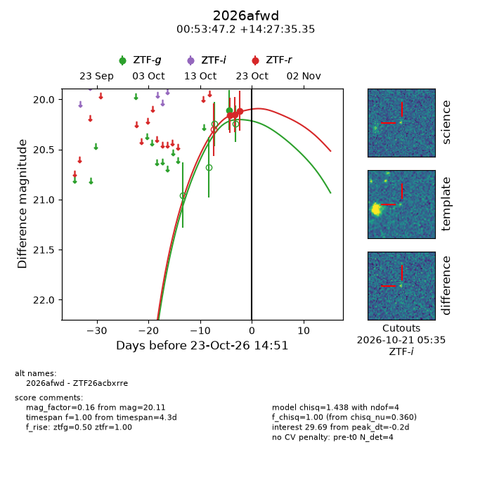
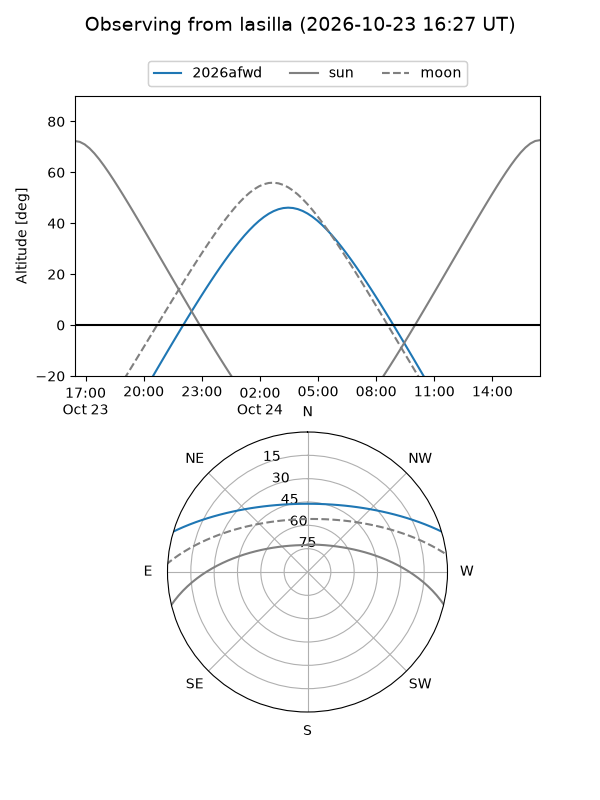
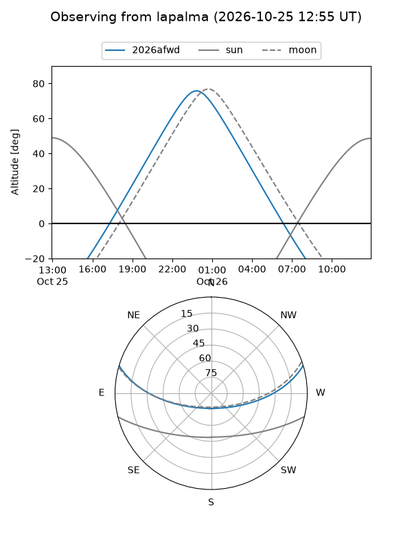
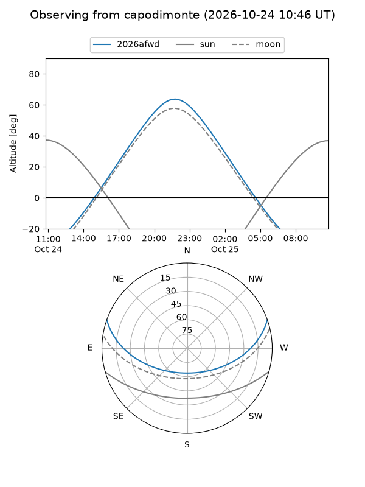
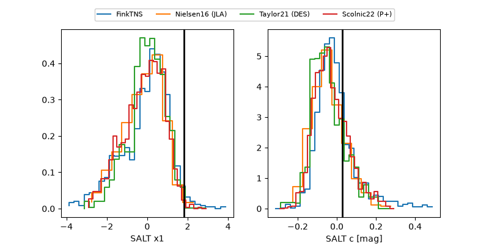

2026afwd
Target 2026afwd at 2026-10-23 14:54
Aliases and brokers:
FINK-ZTF: ztf.fink-portal.org/ZTF26acbxrre
Lasair-ZTF: lasair-ztf.lsst.ac.uk/objects/ZTF26acbxrre
ALeRCE-ZTF: alerce.online/object/ZTF26acbxrre
YSE-PZ: ziggy.ucolick.org/yse/transient_detail/2026afwd
TNS name: wis-tns.org/object/2026afwd
Direct TNS query: direct search
alt names
ZTF26acbxrre (ztf,fink_ztf)
2026afwd (tns,yse)
Coordinates:
equatorial (ra, dec) = 13.4465,+14.45982
equatorial (HMS+DMS) = 00:53:47.17,+14:27:35.35
galactic (l, b) = (123.7883,-48.40802)
Flags:
peak dt: -0.2
Photometry:
last ztfg=20.11, ztfr=20.11
1 ztfg, 3 ztfr detections
Lightcurve

Visibility



Additional plots
